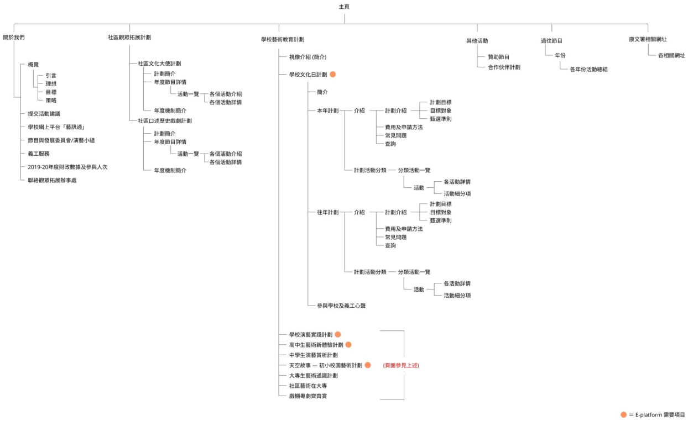
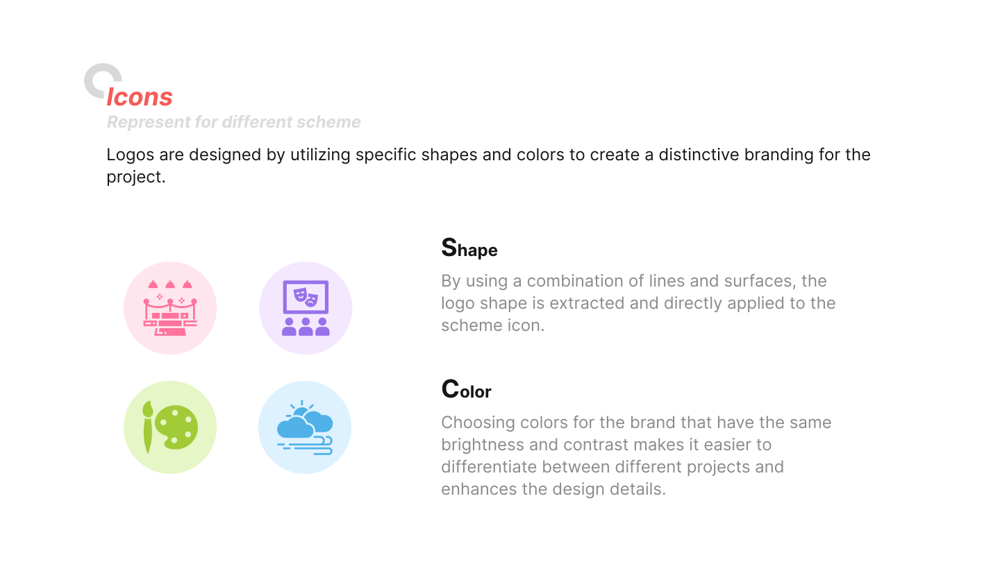
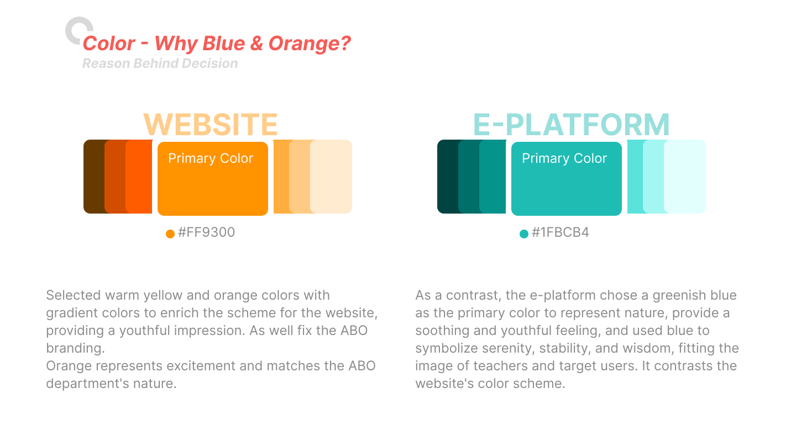
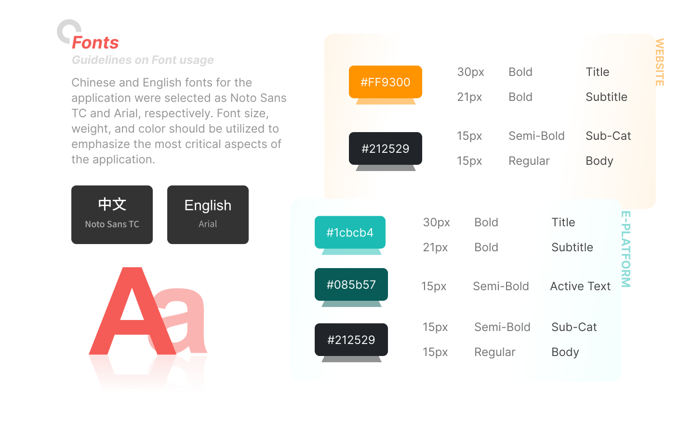
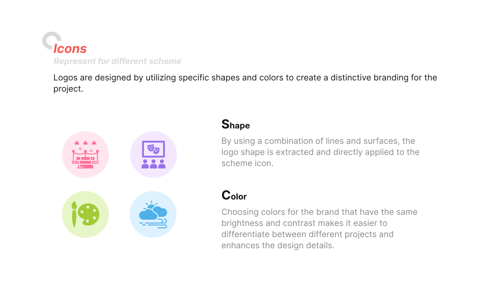
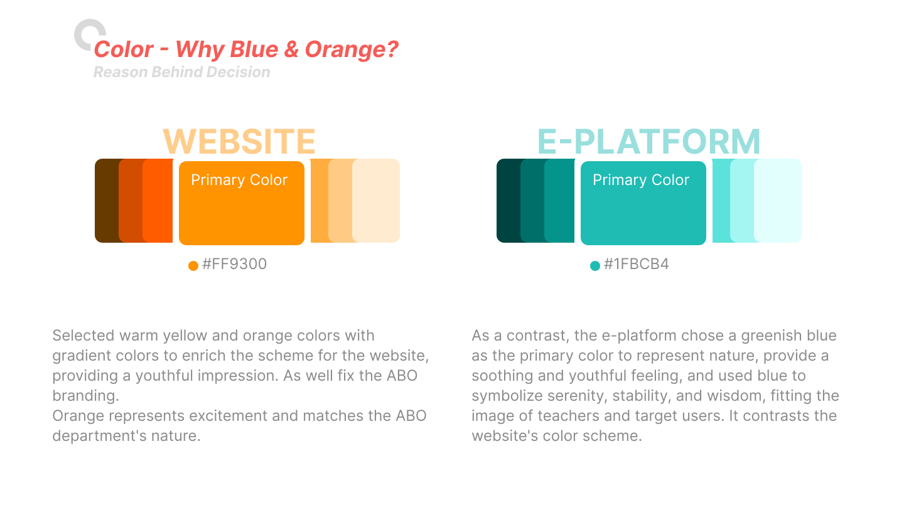
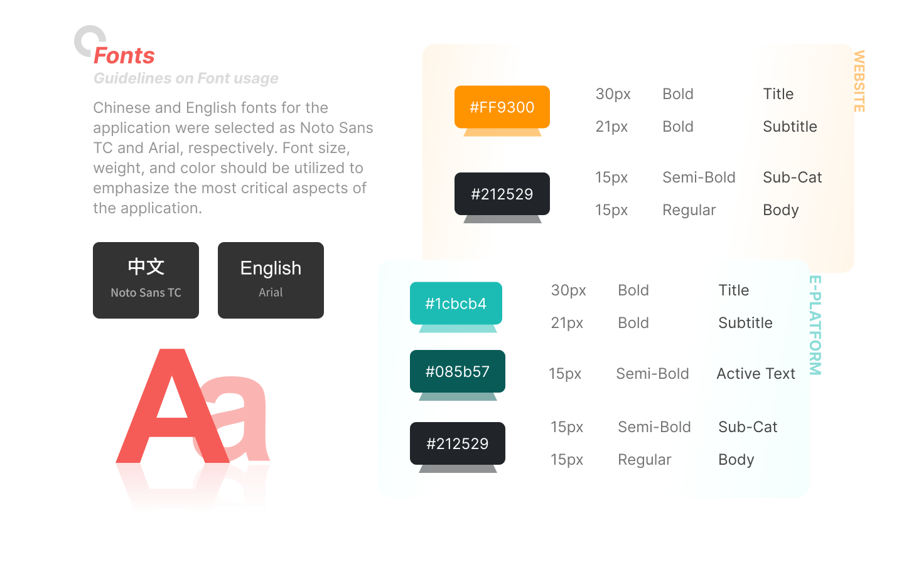

Information Architecture Reform
The design direction mainly emphasizes efficiency, simplicity, and clear information stucture. Starting with a clear understanding of the business context, the design aims to be close to modern design aesthetics, using concise large images to highlight the essence of automobiles.
Users can receive quick feedback through clear operation dynamics, allowing them to perform a series of operations efficiently on the website.



 
